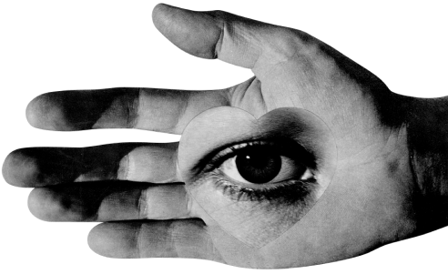
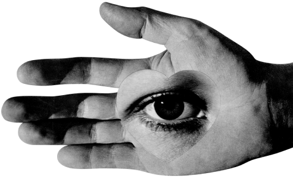

Design Crafts
Fine Arts
+ Walter Gropius

The Bauhaus Manifesto
The ultimate goal of all art is the building! The ornamentation of the
building was once the main purpose of the visual arts, and they were
considered indispensable parts of the great building. Today, they exist
in complacent isolation, from which they can only be salvaged by the
purposeful and cooperative endeavours of all artisans.
모든 조형 미술의 궁극적인 목표는 건축에 있다. 한동안은 건축물을 장식하는 것이 미술의 가장 훌륭한 과제였다
다시 말해, 미술은 건축에 있어서 불가결한 구성 요소였다. 그러나 오늘날의 미술은 고립상태에 있다
미술이 이와 같은 고립상태에서 벗어날 수 있는 길은 오로지 모든 공예가들의 적극적인 협력을 통해서만 가능하다

The art
schools
must return
to the

workshop
이제 미술학교들은 다시 공방과 통합되어야 한다.

 



The Bauhaus Manifesto
Architects, sculptors, painters—we all must return to craftsmanship! For
there is no such thing as “art by profession.” There is no essential difference
between the artist and the artisan. The artist is an exalted artisan. Merciful
heaven, in rare moments of illumination beyond man’s will, may allow art to
blossom from the work of his hand, but the foundations of proficiency are
indispensable to every artist. This is the original source of creative design
건축가, 조각가, 화가들은 모두 공예로 돌아가야 한다. 왜냐하면 미술은 직업이 아니기 때문이다
미술가와 공예가 사이에 본질적인 차이란 존재하지 않는다. 미술가란 고양된 공예가이다
영감이 찾아오는 순간에 자기 의지를 초월하여 신의 은총이 그의 작업을 예술로 꽃피게 하는 것이다
모든 미술가들에게 공예의 숙련이 필수적이다. 그 속에 창조적 상상력의 근원이 있다


The Bauhaus Manifesto
So let us therefore create a new guild of craftsmen, free of the divisive
class pretensions that endeavoured to raise a prideful barrier between
craftsmen and artists! Let us strive for, conceive and create the new
building of the future that will unite every discipline, architecture and
sculpture and painting, and which will one day rise heavenwards from
the million hands of craftsmen as a clear symbol of a new belief to come
이제 공예가와 미술가 사이에 가로놓인 높다란 장벽을 만드는 계급 차별을 없애고 새로운 공예가 집단을 만들자
우리 함께 건축과 조각과 회화를 하나의 통일 속에 포용하고 또 언젠가는 새로운 신앙의 상징처럼,
영감이 찾아오는 순간에 자기 의지를 초월하여 신의 은총이 그의 작업을 예술로 꽃피게 하는 것이다
수많은 일꾼들의 손으로부터 창공으로 올라갈 새로운 미래의 건축을 희구하고 상상하며 창조의 길로 나아가자
Brand